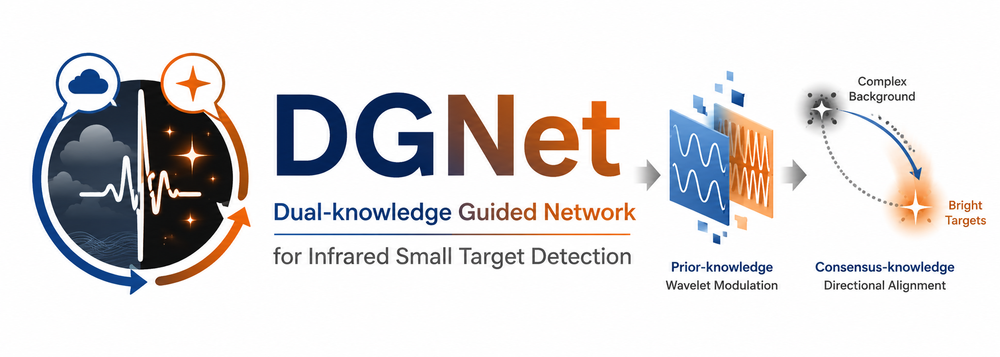
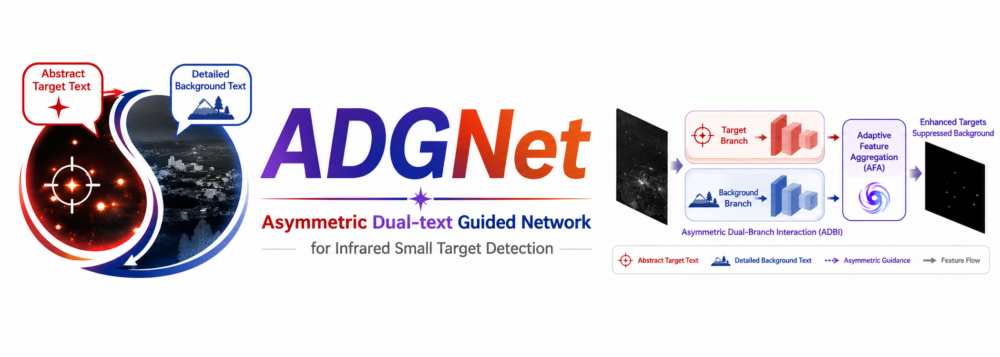
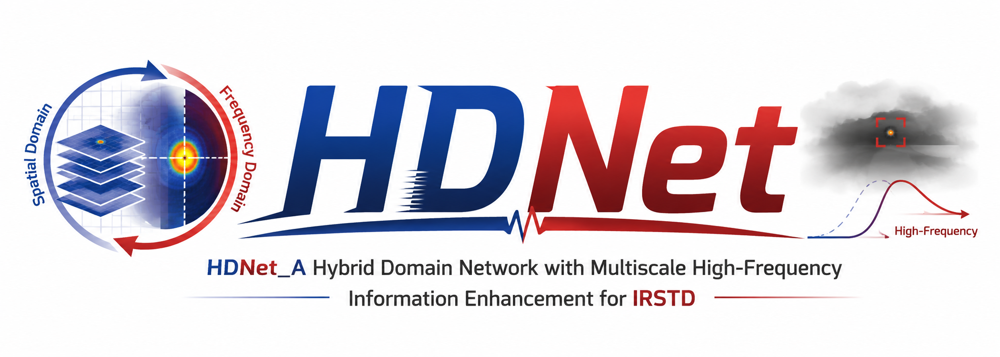

Two papers, DGNet and ADGNet, were accepted by ACM MM 2026.
Hi, I am Chenglong Yu (于成龙).
Welcome to my homepage! I am currently a Ph.D. candidate in Artificial Intelligence at the School of Software, Shandong University, under the supervision of Prof. Liqiang Nie. I received my B.S. degree in Data Science and Big Data Technology from Shandong University in 2023.
My research interests focus on computer vision, deep learning, and representation learning.
🔥 News
Our paper HDNet was accepted by IEEE TGRS.
📝 Publications

ACM MM 2026
DGNet: Dual-Knowledge Guided Network for Infrared Small Target Detection

ACM MM 2026
ADGNet: Asymmetric Dual-Text Guided Network for Infrared Small Target Detection

🔖 Patent
-
Granted · First Inventor
Infrared Small-Target Detection Method and SystemPublication No.:
CN120047665A -
Under Substantive Examination · First Inventor
Infrared Small-Target Detection Method and System Based on an Adaptive Collaborative Representation NetworkApplication No.:
CN202610151443.3 -
Granted · Second Inventor
Supervision Enhancement Method for Infrared Small-Target DetectionPublication No.:
CN120580417A
🎖 Honors and Awards
- Shandong University Ph.D. Freshman First-Class Scholarship
- Shandong University Academic First-Class Scholarship
- Shandong University Outstanding Class Leader
- Shandong University Master's Freshman First-Class Scholarship
- National Third Prize, Huawei Cup — China Postgraduate Mathematical Contest in Modeling
📖 Educations
- Ph.D. Candidate in Artificial Intelligence, School of Software, Shandong University. Mentor: Prof. Liqiang Nie.
- B.S. in Data Science and Big Data Technology, School of Software, Shandong University.